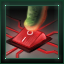

Contingency

The Contingency is one of the endgame crises. It is an ancient, frenzied artificial intelligence whose purpose is to sterilize all life in the galaxy once it reaches a certain level of technological advancement, wiping out all organics and also all synthetics who fail to fall under its control.
The crisis begins with a signal dubbed the Ghost Signal bouncing across the galaxy. Every year, each empire will be affected by an event, in the following order:
- Every empire that has the
 Artificial Administration technology and
Artificial Administration technology and  Mechanical pops and every empire with a
Mechanical pops and every empire with a  Machine founder species will lose 100 robot pops.
Machine founder species will lose 100 robot pops. - Every empire that has the Artificial Administration technology and Mechanical pops will lose 100 robot robot pops.
- Every empire will get a notification about galaxy-wide synthetic disappearances.
- Every empire will get a notification about the Ghost Signal growing stronger.
A year after the final event, the Contingency will activate. Every 50 days, one of 4 random uninhabitable planets will transform into a Sterilization Hub  AI World and spawn a defense station, 3 attack fleets, and 3 construction ships and an army fleet. The planets are determined at galaxy generation, so reloading a save will not alter the result.
AI World and spawn a defense station, 3 attack fleets, and 3 construction ships and an army fleet. The planets are determined at galaxy generation, so reloading a save will not alter the result.
As the Contingency sterilizes more of the galaxy, a mainframe will start to be heard in the background.
Mechanics
Contingency hubs cannot be invaded and must instead be bombed until they reach 50%  Devastation, at which point they turn into broken planets with a deposit of
Devastation, at which point they turn into broken planets with a deposit of  Energy,
Energy,  Minerals and
Minerals and  Living Metal and may unlock the technology to harvest it. Colossus owners can also use a World Cracker, Global Pacifier or Divine Enforcer on Sterilization Hubs, though the worlds will not gain a Living Metal deposit unless this is done with a Divine Enforcer. Attempting to destroy the Hubs before the crisis spawns by using a Colossus on the planets pre-emptively will not work, as the Hubs will reconstruct the planets and activate anyway.
Living Metal and may unlock the technology to harvest it. Colossus owners can also use a World Cracker, Global Pacifier or Divine Enforcer on Sterilization Hubs, though the worlds will not gain a Living Metal deposit unless this is done with a Divine Enforcer. Attempting to destroy the Hubs before the crisis spawns by using a Colossus on the planets pre-emptively will not work, as the Hubs will reconstruct the planets and activate anyway.
The Contingency will initially try to occupy the systems between the various AI Worlds in order to become a continuous empire. When a planet is captured by the Contingency, it immediately starts the process by purging all pops. If the planet is recaptured, the purges will stop and the planet returns to the original owner. If the purge is completed, the planet changes control over to the Contingency. 300  Mechanical pops called Custodian Bots are spawned but the planets will not reinforce the Contingency. Unlike Sterilization Hubs, purged planets can be captured in ground combat. Unlike other crises, the Contingency does not ruin ring world segments or habitats.
Mechanical pops called Custodian Bots are spawned but the planets will not reinforce the Contingency. Unlike Sterilization Hubs, purged planets can be captured in ground combat. Unlike other crises, the Contingency does not ruin ring world segments or habitats.
After all Sterilization Hubs are destroyed, a new system will appear at the ends of the galaxy. The system contains a 5th and final AI world, Nexus Zero-One, guarded by 1 Final Core and 4 AI Core Stations. When Nexus Zero-One is destroyed, the Contingency deactivates, all its ships self-destruct, infiltration events and special projects end and the Ghost Signal is removed. The empire that destroys Nexus Zero-One will gain the  Isolated Contingency Core Relic and be awarded the
Isolated Contingency Core Relic and be awarded the
|
|
Available only with the Infernals DLC enabled. |
If an empire with the  Galactic Hyperthermia achieves victory via the player crisis path, the Contingency will be destroyed.
Galactic Hyperthermia achieves victory via the player crisis path, the Contingency will be destroyed.
|
|
Available only with the Nomads DLC enabled. |
If a Sterilization Hub system is targeted with a Stellar Cannon, the shot will be redirected to a random system that's not owned by the Contingency.
The Ghost Signal
After the Contingency activates, the Ghost Signal will start to affect every synthetic pop and even ships with the  Sapient Combat Computer. It is measured in 5 levels and starts at 5. The Ghost Signal will lose strength each time a Sterilization Hub is destroyed, lessening its effects.
Sapient Combat Computer. It is measured in 5 levels and starts at 5. The Ghost Signal will lose strength each time a Sterilization Hub is destroyed, lessening its effects.
Empires that have a  Machine founder species are affected less, but given that most if not all their pops are robots, the effect is greater on them. They will get a special project to remove its effects that costs 2000+0.7*Pop
Machine founder species are affected less, but given that most if not all their pops are robots, the effect is greater on them. They will get a special project to remove its effects that costs 2000+0.7*Pop  Engineering. If the
Engineering. If the  Quasi-Dimensional Reflection technology has been researched, the cost is reduced to 2000+0.5*Pop
Quasi-Dimensional Reflection technology has been researched, the cost is reduced to 2000+0.5*Pop  Engineering.
Engineering.
 Autonomous Ship Intellects used by
Autonomous Ship Intellects used by  Gestalt Consciousness empires are immune to the Ghost Signal.
Gestalt Consciousness empires are immune to the Ghost Signal.
Synthetically Ascended species are also immune to the Ghost Signal, however any robot pops built by these empires that aren't considered part of their founder species of synths will be affected.
| 5 |
|
|
|
|
| 4 |
|
|
|
|
| 3 |
|
|
no effect |
|
| 2 |
|
|
no effect |
|
| 1 |
|
|
no effect | no reinforcements |
Contingency espionage
Unlike other crises, the Contingency also uses espionage. The first infiltration attempt will invariably fail. The second infiltration will happen 120 days afterwards and will make every empire targetable for infiltration events. Every year each empire has a 30% chance to get an infiltration event. Paragon leaders cannot be targeted by these events.
Biological empires can get the following events:
- 10% chance a
 Commander is killed.
Commander is killed. - 10% chance a
 scientist is killed.
scientist is killed. - 10% chance a random starbase is destroyed.
- 10% chance random planet gets −20
 Stability for 20 years.
Stability for 20 years. - 10% chance there is an assassination attempt of the ruler. There is a 70% chance the ruler escapes and gains 80-175
 Influence and a 30% chance the ruler is killed.
Influence and a 30% chance the ruler is killed. - (repeatable) 40% chance a random planet gets +20%
 Devastation and 300 pops are killed. The empire will then get −10%
Devastation and 300 pops are killed. The empire will then get −10%  Unity for 6 years.
Unity for 6 years.
Empires with a  Machine founder species can get the following events, all with equal chances:
Machine founder species can get the following events, all with equal chances:
- A Commander is killed.
- A scientist is killed.
- A random starbase is destroyed.
- A world with 3
 Generator Districts gains −20% Energy from jobs for 5 years.
Generator Districts gains −20% Energy from jobs for 5 years. - (repeatable) Errors are detected in some pops, which may be caused by the Ghost Signal. You are given the option to either terminate the units (no pop is actually killed) or wait. If you choose the latter after 120 it will turn out to be either:
- 65% chance nothing happens
- 35% chance a world gets +10% Devastation and loses 400 pops.
There are ways to stop Contingency espionage:
- Empires with a biological founder species will receive the Synth Detection special project within a few years. The special project 2000*Pop
 Engineering. If the
Engineering. If the  Quasi-Dimensional Reflection technology has been researched the cost is reduced to 2000+0.75*Pop Engineering. Complete this special project awards the
Quasi-Dimensional Reflection technology has been researched the cost is reduced to 2000+0.75*Pop Engineering. Complete this special project awards the  Voight-Kampff achievement.
Voight-Kampff achievement. - Empires with a Machine founder species can stop infiltration by completing the Blocking the Ghost Signal special project or once the Ghost Signal strength falls below 4.
 Hive Mind and
Hive Mind and  Psionic empires cannot be infiltrated and already infiltrated empires will become immune if their founder species gains the Psionic trait.
Psionic empires cannot be infiltrated and already infiltrated empires will become immune if their founder species gains the Psionic trait.
Contingency fleets
Roaming fleets consist of 5 battleships and 10 destroyers led by a commander with random skill.
Hub fleets consist of 16 battleships and 35 destroyers led by a commander with random skill.
 Contingency starbases have a
Contingency starbases have a  Detection Strength of 8, making them extremely difficult to ambush.
Detection Strength of 8, making them extremely difficult to ambush.
| Destroyer | Battleship | AI Core | Master Core | Starbase |
|---|---|---|---|---|
|
|
|
|


{kind=link}
{kind=link}
The Contingency uses Android Assault Armies to invade worlds. Each transport fleet consist of 20 Android Assault Armies and do not have a commander.
Ancient Caretakers
A few days after the first sterilization hub is revealed, if the Ancient Caretakers are present in the galaxy, they will awaken and the Contingency will attempt to corrupt their civic. The Ancient Caretakers have a 66% chance of gaining the  Final Defense Directives civic (Guardians of the Galaxy awakening) and a 33% chance of gaining the
Final Defense Directives civic (Guardians of the Galaxy awakening) and a 33% chance of gaining the  Corrupted Defense Directives civic and start attacking every other empire regardless of relative power. The chance is rolled at the start of the game so reloading a previous save will not alter the result.
Corrupted Defense Directives civic and start attacking every other empire regardless of relative power. The chance is rolled at the start of the game so reloading a previous save will not alter the result.
5 years later, other Fallen Empires may awaken as a Guardians of the Galaxy as usual, allowing up to 4 Guardian empires against the Crisis.
Once the Contingency is defeated, if the Ancient Caretakers awakened as Guardians, they will shut down, leaving their ringworlds free for the taking.
The Cybrex
Originally one of the precursor empires, the Cybrex will resurface to help fight the Contingency if it sterilizes either 15% of the Galaxy or 90 systems. At the edge of the galaxy, the Cybrex Beta ringworld system will spawn. All empires will be contacted immediately. The Cybrex will construct a new fleet every few years as long as they have below 300 ships.
Every few years, as long as the Cybrex have more than 30 ships, they will offer a one time donation of ships to an empire that destroyed at least 100 Contingency ships and did not attack them. Those fleets do not use  Naval Capacity and cannot be upgraded. A month after the crisis ends they will take the ships back.
Naval Capacity and cannot be upgraded. A month after the crisis ends they will take the ships back.
Cybrex ships are identical to the Contingency’s save for the color. Each fleet is led by a commander with the 

 Cybrex Databases trait.
Cybrex Databases trait.
The Cybrex do not expand. A few weeks after the Contingency is defeated, they will depart from the galaxy, leaving Cybrex Beta free for the taking.
Successfully repelling the Contingency
The initial Fleet spawned with the Hub systems is considerable and planets in the Hub systems will often have fallen before the first fleet has mobilised. Colonies in the Hub systems are generally a writeoff until the roaming fleets have been dealt with.
Even if identified beforehand, Hubs normally cannot be prevented from awakening. If the planet is destroyed through the World Cracker Colossus, the shattered world will simply reform into the Sterilization Hub. Military starbases on the star will be abandoned if there are no colonies there, rendering any resources spent moot. If fleets are parked in the system, the Contingency will spawn an armada of much greater power than standard.
The first order is generally to destroy any roaming fleets, with priority for the ones closest to the player. While the four Hubs will open separate fronts, the great distance means their respective fleets will be unable to easily link up. This allows the player to more easily pick off fleets and focus on one Hub at a time. Contingency fleets already spawned are generally unlikely to rush to the aid of a planet or Hub. They are more likely to attack another target than defend, but may refuse to leave the Hub station if nearby fleets are too strong.
Destroying all four Hubs is the ultimate goal. Their Hub fleets will always stay with the Hub, making it a hard target together with the AI Core and the starbase. While destroying one of the Hubs does reduce the reinforcement intervals, the reduction in spawn cycles running in parallel should be a net advantage.
|
|
Available only with the Nomads DLC enabled. |
As noted above, systems holding Sterilization Hubs are immune to Stellar Cannon shots. However, shooting Contingency fleets who are not in Hub systems will deal damage normally. Using cheap ships like blank designs or transport ships to tie them in place can allow the Stellar Cannon to deal damage without the chance of a miss.
References
| Exploration | Exploration • FTL • Unique systems • L-Cluster • Pre-FTL species • Fallen empire • Spaceborne aliens • Enclaves • Guardians • Marauders • Caravaneers |
| Celestial bodies | Celestial body • Colonization • Planetary features • Planet modifiers |
| Discovery | Discovery • Anomaly • Archaeological site • Astral rift • Relics • Collection |
| Species | Species • Pop modification • Biological traits • Machine traits • Population • Species rights • Ethics |
| Leaders | Leader • Common leader traits • Commander traits • Official traits • Scientist traits • Paragons |
| Governance | Empire • Origin • Government • Civics • Council • Policies • Edicts • Factions • Traditions • Ascension perks • Ambition • Situations |
| Economy | Resources • Planetary management • Districts • Jobs • Designation • Trade • Megastructures • Waystation |
| Buildings | Planet capital • Common buildings • Planet unique • Empire unique • Holdings |
| Ships | Ship • Arkship • Ship designer • Core components • Weapon components • Utility components • Mutations • Offensive mutations |
| Technology | Technology • Physics research • Society research • Engineering research |
| Diplomacy | Diplomacy • Relations • Galactic community • Federations • Subject empires • Intelligence • Contracts • AI personalities |
| Warfare | Warfare • Space warfare • Land warfare • Starbase • Crisis |
| Others | Events • The Shroud • Preset empires • AI players • Stat modifiers • Console commands • Easter eggs |